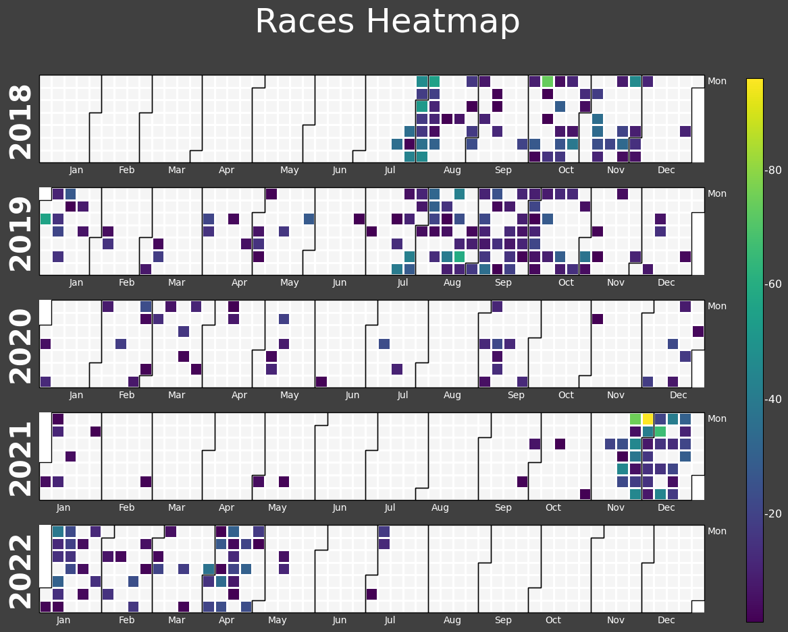

Aug. 18, 2022
Aug. 18, 2022
During the summer of 2018 I decided to train myself on "proper" touch typing.
I was already familiar with typeracer, and as soon as I found out I could download my data I knew I wanted to make a project out of it.
This scatterplot depicts a high-level summary of my progress thus far. The following sections will explore my typeracer activity, individual races, and WPM improvement.
These charts largely speak for themselves, but there are a few points worth discussing. To preface, the horizontal dotted lines illustrate the average for that time scale. All dates and times were converted from UTC to local, and they account for daylight savings shifts.
Activity in 2020 was dramatically less than that of adjacent years. One contributing factor may have been the onset of COVID-19 and the turbulence that followed. I fondly look back on the mass exodus from residence during March 2020, and the delightful mess that ensued for the remainder of that semester.
The monthly breakdown was the most surprising to me. I have some ideas to justify each month's activity, but June is a mystery to me. It somehow has a grand total of 3 races over the course of 5 years.

I would like to credit typeracerdata.com for the idea of marathons; however, I took a slightly different approach.
~calendar heatmap~
0000000000000000000000000